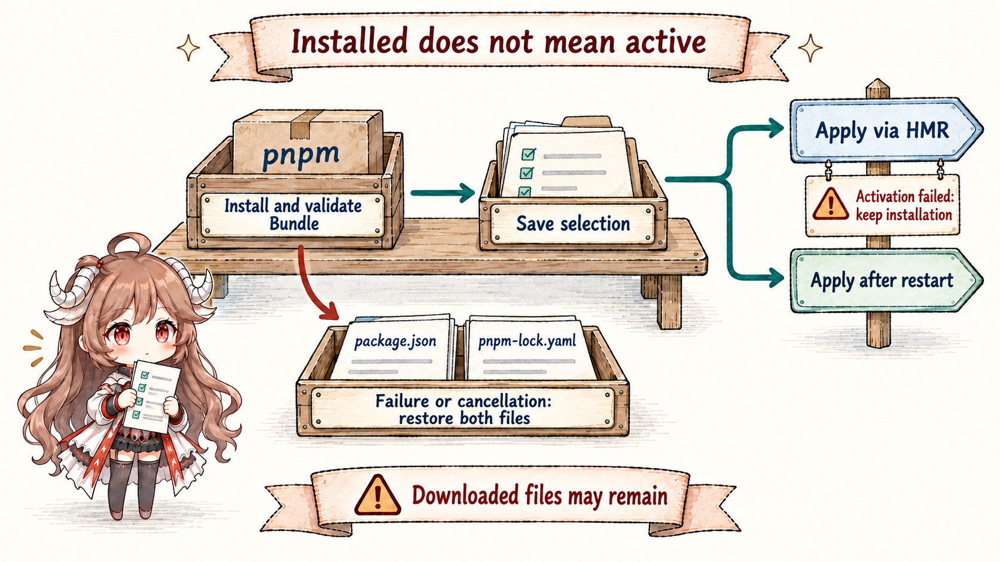
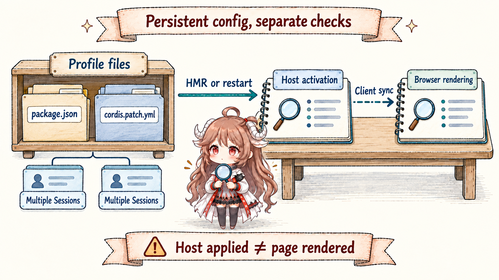

Suppose you want a team status panel inside DSH. The agent first needs to discover where UI can appear and which Services expose the data, then package ordinary plugin code. The hard questions arrive after installation: which sessions change, what survives restart, when saved configuration becomes usable, and which files remain after failure.
Reading contract.Follow that panel through inspection, installation, enablement, and removal. You should be able to distinguish two read-only Inspect tools from the six plugin_manager actions, connect a Bundle and profile configuration to running Fibers, and read changed separately from application rather than reporting “installed” as “visible in the page.”
Evidence boundary.This chapter is pinned to ddefc45. Current tool registration exposes only cordis_inspect_list and cordis_inspect_query; Creator makes persistent changes through Plugin Manager. Dynamic Host/Client runners retain programmatic callers and browser controls, but their define/run/stop/undefine methods are no longer current model tools.
1. Read real interfaces before writing a plugin
1.1 Inspect returns contracts, not business invocations
cordis_inspect_list returns Provider manifests rather than scanning an arbitrary callable object. Host catalogs include Service, Event, Builtin, and Tool; Client mirrors include Service, Event, Builtin, Slots, and Theme. Each Provider declares read-only methods and input/output JSON Schemas. The panel author selects real names from that directory before requesting exact signatures.
The platform, provider, and method for cordis_inspect_query must come from the directory. Host queries execute locally; Client queries await the first valid page response. With no responding page, a query stays pending until a response or cancellation. Reading a Service signature does not call that Service; reading a Slot's props and registration requirements does not create UI.
For the status panel, browse the compact Slots tree without a root, then request an exact Slot root for its complete registration requirements. An exact Factory root instead returns identity, scope, and registrant; it must not be mistaken for an ordinary Slot's complete props. Query the required Service and Theme next. This preserves the valuable separation in the original design: reflection supplies facts without quietly becoming a universal write interface.
1.2 The current entry point is an ordinary Bundle
A Bundle is a package declaring dsh.bundle.patch, which names YAML that inserts or overrides Loader entries. It is distinct from a process-local dynamic Package. One lives in ordinary files and package dependencies; the other lives in a runner's in-memory Registry. Current Creator places Inspect and Plugin Manager in the same Agent preset, allowing inspection, package authoring, and installation into the current profile.
This minimal Bundle declaration is illustrative. It omits the panel's Host/Client implementations and Client packaging metadata: it connects configuration to a package, but the manifest alone cannot create a panel.
{
"name": "@example/status-panel",
"version": "1.0.0",
"type": "module",
"exports": { ".": "./index.js" },
"dsh": { "bundle": { "patch": "./cordis.patch.yml" } }
}- insert:
- id: status-panel
name: '@example/status-panel'Installation verifies Bundle metadata and parses its patch before selecting the package in the profile. A configuration-only Bundle can also insert an existing plugin such as an MCP client; configuration does not always require new Host executable code.
2. Persistent management widens the scope of permission
2.1 Six actions operate on different objects
plugin_manager exposes the service used by the Web management page. Read lists for exact identifiers before choosing one of the four persistent actions:
| Action | Object and effect | What remains |
|---|---|---|
list_plugins / list_bundles | Read paginated profile inventory and exact identifiers. | No configuration mutation; the same tool permission check still applies. |
set_plugin | Change disabled in the last matching profile override, or append one. | Other override fields and the installed package remain. |
set_bundle | Edit ordered dsh.profile.bundles; re-enabling appends at the end. | Disabling retains the dependency; precedence may change. |
install_bundle | Install and validate a Bundle, then enable it by default. | A successful installation survives later enablement failure. |
remove_bundle | Deselect, unload runtime contributions, then run pnpm remove. | Failure preserves completed steps and remaining state without re-enabling. |
To suspend the status panel, use set_bundle with enabled: false instead of deleting the package. Use set_plugin to disable one individually addressable entry. The manager protects its own essential components and does not edit composition inside an Agent preset. Profile changes affect every session using that profile; the old dynamic registry's per-Session management assumption does not apply.
2.2 Per-call approval differs from dependency-script approval
Before dispatching any action, even a list, the tool requires danger-full-access or approval for this call. Under a lower permission mode, ask may request approval; never, refusal, cancellation, or an unavailable approval channel prevents execution. Approval for one call does not change the Session's permission mode.
The reason is concrete: installed Host code executes in-process outside the workspace sandbox, and installation may execute dependency scripts. If pnpm blocks scripts, pendingBuilds lists undecided package names throughout the profile, including earlier attempts. Pass approvedBuilds on retry only after explicit user approval. The service validates that names are still pending; it cannot verify whether approval actually occurred in a conversation. Saved permission applies by package name within the profile and survives subsequent installation failure.
3. Installation, saved configuration, and activation are separate facts

3.1 Package writes and HMR coordinate differently
The CLI and service share a profile manifest writer lock so package and manifest writes do not overlap. Pnpm runs outside the HMR queue; only after successful installation and Bundle validation does configuration application enter runExclusive(). HMR itself does not acquire the package lock. Slow downloads therefore need not block every source reload, while configuration application remains serialized with automatic reloads.
If installation fails, is cancelled, or produces a non-Bundle package, the manager restores the previous package.json and pnpm-lock.yaml. It does not roll back the whole filesystem: downloaded node_modules or pnpm-store files may remain, and pnpm-workspace.yaml, which records script decisions, is not restored. If installation succeeded but enablement fails, the dependency and any saved selection remain for repair.
Cancellable service callers use a requestId to track one installation. installing, cancelling, and applying describe progress. cancelInstall() reports cancelled only after pnpm exits and files are restored; once applying starts, it reports too-late. The current Agent tool has no cancel action. This is a service/Web capability, not a model capability inferred from the presence of its type.
3.2 Read changed and application together
ChangeResult separates disk changes from runtime outcomes. changed compares profile files; application may be applied, restart-required, overridden, failed, or cancelled. Repeated enablement can be effective with changed false. Successfully saved configuration can have changed true while application fails.
{
"stage": "enable",
"target": "@example/status-panel",
"changed": true,
"application": "restart-required",
"enabled": true
}This simplified result permits only “configuration saved; restart required.” Without HMR, the profile does not apply changes immediately. Replacing an installed package version also needs a restart to load a fresh JavaScript module generation. A higher-priority home or launch override can defeat a plugin toggle and produce overridden. Live reconciliation awaits removed-resource cleanup and Loader settlement; new or changed inactive states fail, while unchanged pre-existing problems return warnings.
4. Host activation does not establish browser success

4.1 Acceptance follows the visible outcome
Management results describe Host activation; browser synchronization failures appear separately in the Settings plugin list. For the status panel, also check that the Client synchronized, the panel appears in the correct Slot, required Services are available, and disabling removes listeners and UI registrations. Installed or Host applied alone does not establish successful rendering.
Persistence adds responsibility. Restart reconstructs composition from profile files, and several Sessions may receive the new behavior. Disabling a Bundle, repairing its configuration, and removing a dependency affect different objects. Removal unloads runtime contributions before deleting the package; a failed removal does not reverse every completed step. Compared with temporary eval, this introduces files, dependencies, and release responsibility, while retaining reproducible composition inputs.
4.2 The dynamic runner remains outside the current model write path
The Host runner and Client runner still support programmatic define, run, stop, and undefine. They retain Session-owned immutable Packages, current/next pointers, and Run identities. Host-only definitions start directly; Client-bearing definitions still require browser approval and load Host before Client. Stop retains definitions, undefine deletes them, and process restart clears their in-memory objects.
Those implementations remain useful for studying Cordis effect cleanup, asynchronous activation, and JSON RPC. Keep the entry-point distinction explicit: current tool-cordis cannot create or update dynamic definitions. node:vm also remains API shaping rather than a hostile-code security boundary, and its synchronous timeout cannot bound arbitrary async bodies. Keeping the runner does not keep the old seven-tool Creator workflow.
5. Make self-extension an acceptance decision
- Read interface facts before writing code.Use exact read-only contracts; inspection is not a business call.
- Separate files from running behavior.Bundle installation, profile selection, Host activation, and browser rendering each have a checkpoint.
- Manage cross-session changes at profile scope.Call permission and script approval must cover real in-process execution and persistent files.
- Repair the actual remaining state.Installation may restore two manifests, enablement failure retains installation, and removal failure retains completed steps; there is no universal rollback.
- Code presence does not establish tool availability.Explain the dynamic runner through its actual callers instead of substituting it for the model's current tool inventory.
The seven chapters return to the same questions: who owns state, when execution is allowed, and what failure leaves behind. Current DSH uses read-only Inspect to teach runtime interfaces, then persistent Bundles and Plugin Manager to change later composition. Saved results, activation diagnostics, and user-visible behavior jointly determine whether that extension is complete.